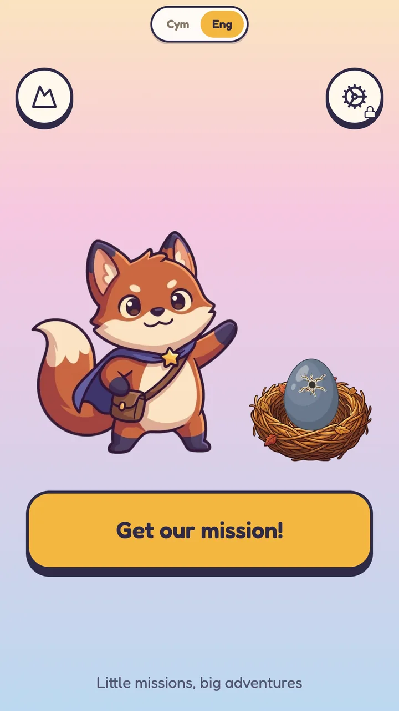
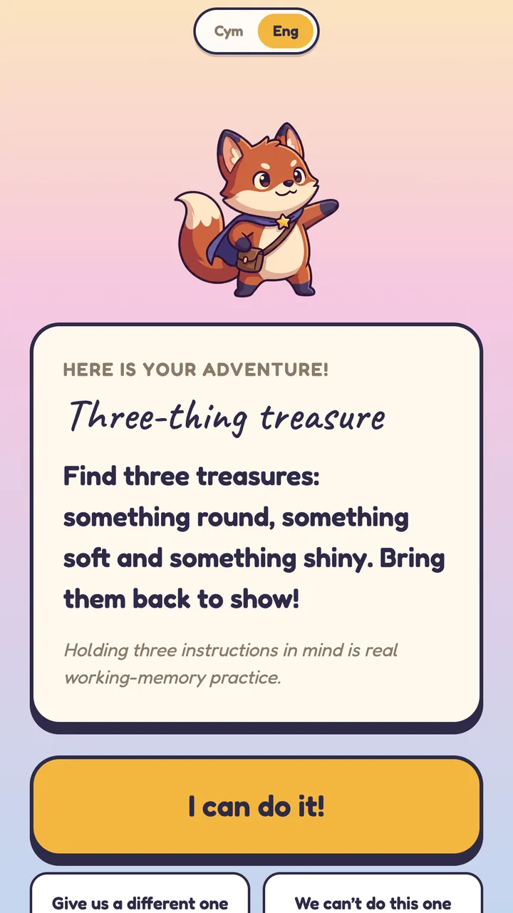
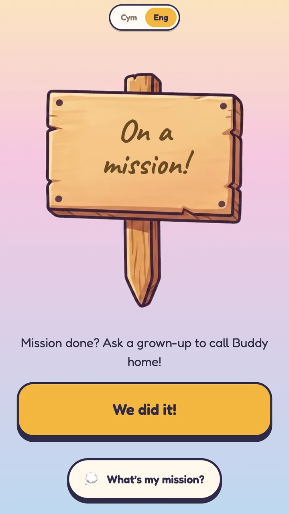
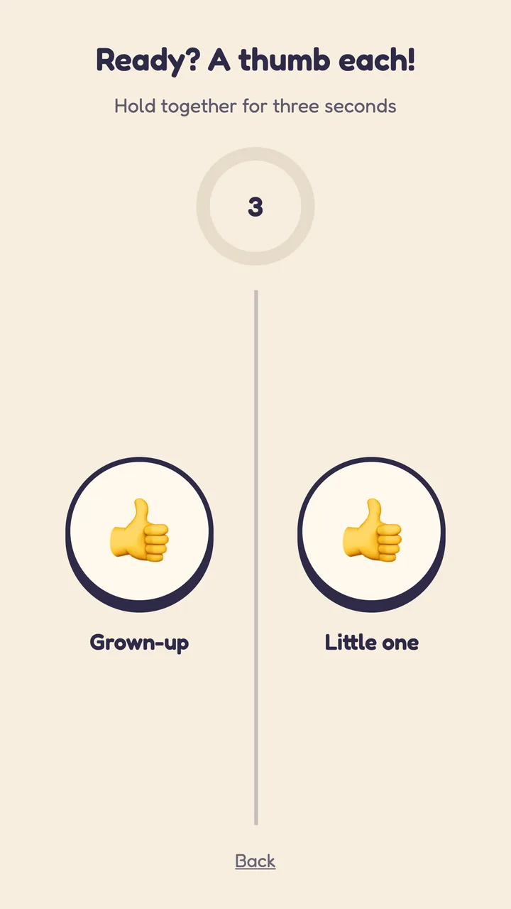
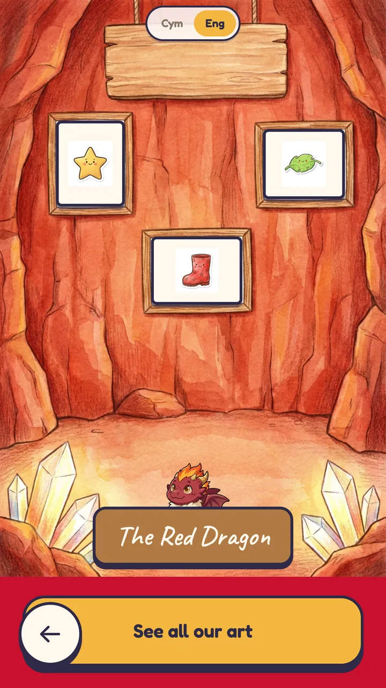
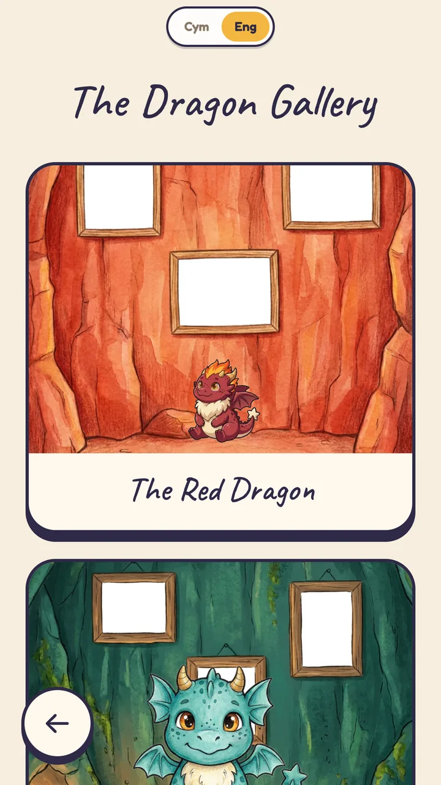
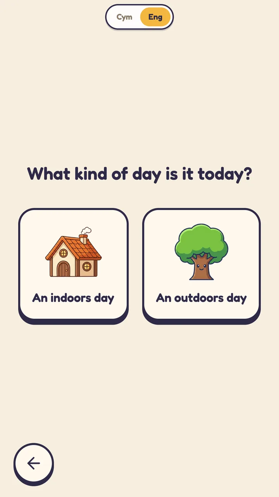

Little missions, big adventures. Deor was designed to let children feel the magic of our real world, with encouraging adult guidance throughout.

A screen that sends children back out into the real world.
Deor hands a child one small mission at a time. Find three treasures: something round, something soft and something shiny. Bring them back to show. The adventure happens off the screen, in the garden, the kitchen, the park, and the app is just the thing that starts it and welcomes them home.
Every mission is done together. A grown-up and a little one press a thumb each to say a mission is finished, so the app never becomes something a child disappears into on their own. Encouragement, not babysitting.
Every mission, every word and every screen exists in Welsh, switchable at any moment, so a child can play in the language they are growing up with at home or at school. Official Cymraeg translation is in progress.
Missions are confirmed with a thumb each, so finishing an adventure is a shared moment rather than a solo tap.
The egg in the nest only hatches after seven days of missions. There is no way to rush it and no way to buy it, so a child learns to hold on to something they are looking forward to and come back for it tomorrow.






The child's own art goes up on the dragon's cave wall, so the thing they made is the thing they come back to look at. Rainy day? Deor asks whether it is an indoors day or an outdoors day and picks missions to match.
How the missions are shaped, how long a child is asked to wait, and how a grown-up is brought into every one, all of it is built on current thinking about how young children learn and self-regulate. Written and built in-house in Cardiff, with no accounts, no ads and no data leaving the device. Live on Google Play now, with the App Store to follow.
Children's apps are held to a higher bar, and we rather like that. Tell us about yours.